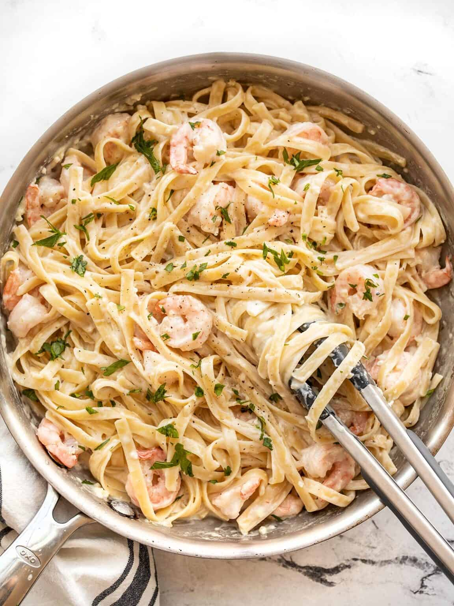

Shrimp Alfredo

Description
Alfredo is a creamy, dreamy pan sauce made from butter and Parmigiano-Reggiano cheese. There are a few additions and adaptations that exist. Unlike béchamel — another classic sauce — Alfredo is best made and eaten straight away. You can use Alfredo for coating broccoli or, most famously, fettuccine.
Ingredients
- Fettuccine pasta
- Shrimp (I used frozen raw 31-40 count per pound size shrimp. You could use smaller or larger. If using smaller ones, take care not to overcook them)
- Butter (unsalted)
- Cream cheese (for added texture and tangy taste)
- Heavy cream
- Chicken broth (for added flavor)
- Garlic
- Parmesan cheese
Directions
- Add the butter, cream cheese, heavy cream, chicken broth, and garlic to a skillet over medium heat. Cook it for 5 minutes;
- Stir in the parmesan cheese and let it bubble for about a minute;
- Add the shrimp and cook for 5-6 minutes;
- Season to taste and toss with the pasta.